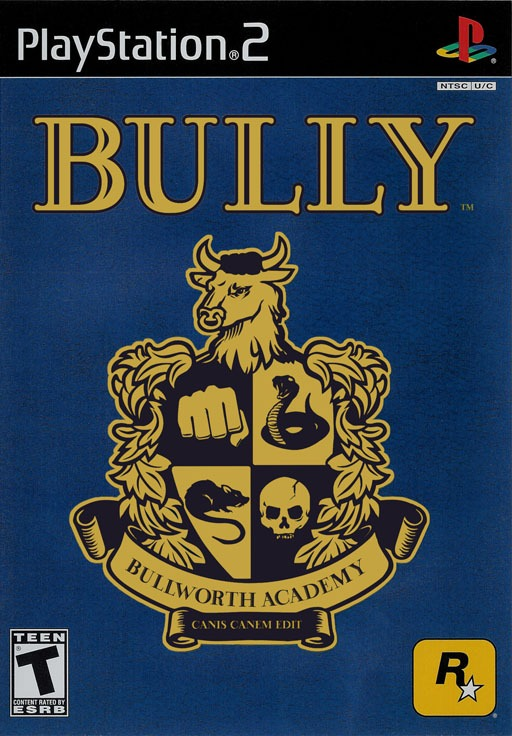

Sinopse
Bully é um jogo de ação e aventura desenvolvido pela Rockstar Vancouver, onde você assume o papel de Jimmy Hopkins, um adolescente que é enviado para a Bullworth Academy, uma escola interna cheia de desordeiros, bullies, esportistas e outros estereótipos adolescentes.
O jogo mistura elementos de mundo aberto com missões baseadas na vida escolar, e permite ao jogador interagir com outros estudantes, professores e funcionários. O objetivo é superar desafios, fazer amigos e conquistar o respeito dentro da escola, tudo isso enquanto lida com conflitos típicos da adolescência.
Características Principais
- Exploração do campus da Bullworth Academy e áreas ao redor
- Missões baseadas em problemas escolares e interações sociais
- Sistema de combate e furtividade para resolver conflitos
- Mini-jogos e atividades como ir à escola, fazer amigos e mais
- Desenvolvimento de habilidades de Jimmy ao longo do jogo
- Trilha sonora com músicas exclusivas e temas de bullying e rebeldia adolescente